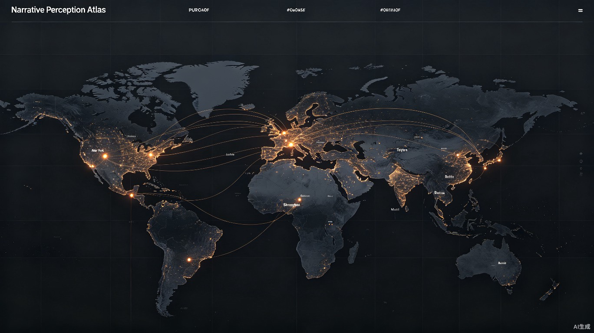

Before content crosses borders,
understand how meaning changes.
在内容出海之前，
先看见不同文化如何理解你的故事。
同一个内容，在不同文化语境下会被解读出截然不同的含义。语言转换只是表层，认知差异才是核心挑战。
强调个人主义与直接表达。同一则品牌故事，在北美受众眼中可能被视为"过于含蓄"或"缺乏态度"。情感共鸣点集中在自我实现与突破性叙事。
社群认同与情感连接优先。内容需要具备"可分享性"和"圈层归属感"。过于个人化的叙事可能被理解为"自私"或"不合群"。
需要在统一品牌调性与本地化表达之间找到平衡。当前依赖"经验直觉"，缺乏数据支撑的叙事决策工具，导致 campaign 成功率参差不齐。
平台推荐机制基于用户行为反馈，但不同文化区用户的"互动信号"含义不同。点赞在东亚可能是礼貌，在拉美可能是真实喜爱——算法难以区分。
不只是翻译工具，而是理解文化语境的AI工作台。每一个节点都为决策提供数据支撑。
上传原始内容脚本、品牌故事或营销素材，支持视频、文本、图片多模态输入
选择目标市场与文化受众，系统自动加载对应文化语境数据库与感知模型
AI模拟不同文化背景受众的第一反应、情绪轨迹与认知框架映射
识别潜在误读风险、文化冲突点与情感偏差，量化叙事一致性评分
生成不只是语言转换的本地化方案，包括叙事重构建议与文化适配策略
同一内容在不同观察者视角下的感知差异。每一个数据点都代表一个真实的认知维度。
多维风险评估模型，量化叙事在跨文化传播中的潜在偏差与适配度。
未来内容出海最大的挑战，
不是语言翻译，
而是认知翻译。
Narrative Perception Atlas
希望成为创作者进入全球市场前的第一张地图。